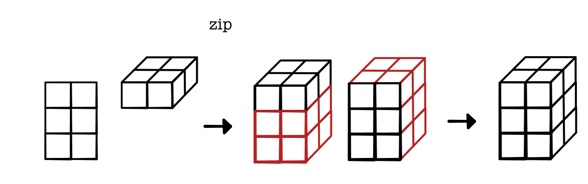
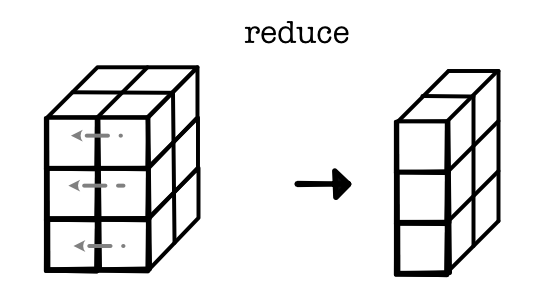

Fusing Operations¶
Another approach we can use to help improve tensor computations is to specialize combinations of operators that are commonly used together. By combining operations we can eliminate unnecessary intermediate tensors. This is particularly helpful for saving memory.
We will consider the specific example of applying a broadcasted zip and then a reduce. For example, consider between a tensor of size (3, 5, 1) and a vector of size (1, 5, 4), and then a sum over the middle dimension.
 Again this computation is correct, but it has two issues. First, it needs to create a tensor of size (3, 5, 4) in the intermediate step. Another more subtle problem is that the reduce operator may need to call save_values on this tensor, which means it stays in memory throughout.
Ideally, we could just skip computing the middle value and just immediately skip to the output. We can do this by writing a specialized tensor Function with a forward function that directly produces the output and a backward to produce the required gradient.

There is a lot of ongoing work on how to do this operator fusion automatically. However, for very common operators it is worth just writing these operators directly and speeding them up.
The most common example of this is matrix multiplication (matmul). Matrix multiplication works exactly as above. Given a (broadcasted) matrices of size (3, 5, 1) and (1, 5, 4), matrix multiply zips them with mul and then reduces the middle dimension with sum.

Writing a fast matrix multiplication operator can be used to compute the forward operator. Luckily to compute the backward operator we use exactly the same function. We can use the following identity from matrix calculus.